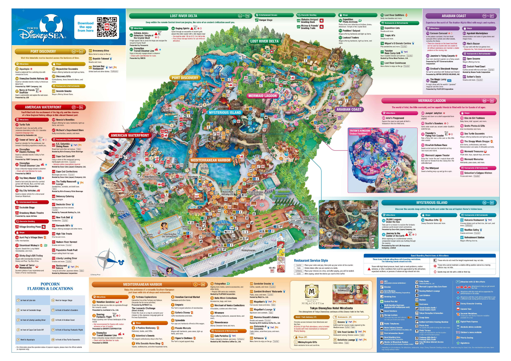

Japan Itinerary 2024
Friday Jan. 12
6pm
- Depart TSA Airport at 6:25pm
Saturday Jan. 13
Sunday Jan. 14
Monday Jan. 15
DISNEYSEA PARK HOURS (9AM - 9PM)
6:30-7am
- Wake up early to get ready
9am
- Enter DisneySea Park

Tuesday Jan. 16
7pm
- Tokyo Skytree (tickets still not bought yet)
Wednesday Jan. 17
Thursday Jan. 18